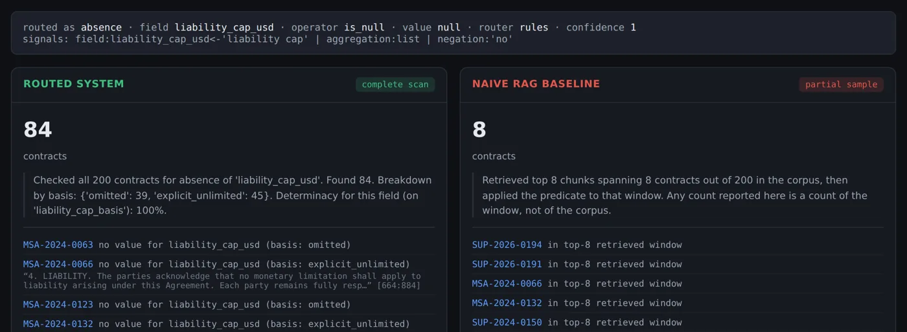

HELLO, I’M
Sai Kiran
Dasari
Software Engineer · Denton, TX
M.S. Computer Science · University of North Texas (UNT)
IMPACT AT A GLANCE
Measured outcomes from production work.
01 / ABOUT
Engineering with context.
I like owning a problem end to end: what the user is stuck on, the API and data model behind it, and the screen they actually use.
I do my best work where reliability matters: order pipelines that have to recover from failures, enterprise pages that have to stay fast, and AI features people need to trust. In my own projects that means testing systems the hard way, against a strong baseline and on questions I didn’t tune for, and building them to say “I don’t know” instead of guessing.
I’m finishing an M.S. in Computer Science at UNT (May 2027), where I also mentor capstone teams on architecture and engineering tradeoffs. I’m looking for backend, full-stack or applied AI roles, as an intern or full-time.
Beyond code: cricket, badminton, movies and exploring new places.
University of North Texas (UNT)
M.S. Computer Science
Expected May 20274.0 / 4.0
NIT Warangal
B.Tech. Computer Science
Warangal, India3.8 / 4.0
02 / EXPERIENCE
Building enterprise systems with measurable impact.
University of North Texas (UNT)JAN 2026 — PRESENT · DENTON, TEXAS
Teaching / Instructional Assistant
- Guide four capstone teams on system architecture, API design, backend implementation, Agile planning and risk management.
- Evaluate algorithm solutions for correctness, time complexity and implementation quality in undergraduate coursework.
MentorshipSystem designAlgorithmsTechnical reviews
ISNJUN — AUG 2026 · DALLAS, TEXAS
Software Developer Intern
- Cut data-mismatch turnaround from 3–5 days to minutes for a process used about 600 times a year, by owning a self-service platform (React, ASP.NET Core REST APIs) that business users run without a developer.
- Built it across API gateway, service and SQL Server layers, unifying access to two databases with Entity Framework Core, Dapper, optimized SQL and stored procedures.
- Developed an LLM-based bug-resolution agent that analyzed logs and stack traces, used RAG to retrieve relevant code and previously resolved issues, and generated proposed patches and regression tests for developer review.
ReactASP.NET CoreREST APIsSQL ServerEF CoreDapperLLMsRAG
OracleOCT 2024 — AUG 2025 · HYDERABAD, INDIA
Software Engineer
- ~60% faster page responses and ~40% faster queries in Oracle Fusion Cloud by optimizing SQL, adding service-level caching and eliminating redundant API calls.
- Built 15+ interfaces and task flows with faceted search, responsive components and analytics views using Oracle JET, Knockout.js, JavaScript and REST APIs.
- Developed a RAG-based assistant for Oracle Fusion Functional Setup Manager: split documentation, release notes and task-dependency data into searchable sections with embeddings and metadata for hybrid retrieval, then served grounded answers with source references through Spring Boot APIs and an Oracle JET interface.
JavaSpring BootOracle JETKnockout.jsREST APIsSQLRAGVector search
AmdocsJUL 2022 — OCT 2024 · PUNE, INDIA
Software Developer
- ~35% faster order processing with Java and Spring Boot middleware and REST APIs integrating Digital One with Order Management, persisting transaction and status data in PostgreSQL.
- ~30% less manual intervention and ~40% faster support response through automated retry, fallout-tracking and ticket-creation workflows for failed orders.
- Built a React and Spring Boot fallout-management app that showed failures across upstream and downstream services, so support teams could find the failed stage and retry eligible orders.
JavaSpring BootREST APIsPostgreSQLKafkaReactMicroservices
03 / SELECTED WORK
Projects you can run and verify.
Explore GitHub ↗FEATURED PROJECTRETRIEVAL · EVALUATION
RAG Query Router
Top-k retrieval can’t count, find a missing clause or compare amounts. This system classifies each question, sends it to an engine that can answer it, and says whether its answer came from a full scan or a sample.
- Seven engines (count, absence, numeric, date, multi-hop, listing, semantic) over typed contract facts, compiled to parameterized SQL.
- Benchmarked against a deliberately strong RAG baseline: hybrid BM25 and dense retrieval with perfect reading of whatever it retrieves.
- Tested on rephrased questions it was never tuned on; questions the contracts can’t answer are declined instead of guessed.
PythonFastAPISQLiteBM25EmbeddingspytestDocker
STRUCTURAL QUESTIONS · 24-QUERY BENCHMARK
1.000routed system
Naive RAG baseline0.193
Routed system1.000
0.869answer accuracy on held-out rephrased questions it was never tuned on

PERSONAL PROJECT · SEP 2026DEVELOPER TOOLS
Bug Resolution Agent
A developer assistant that turns a bug report or registered GitHub issue into a cited diagnosis, proposed code change and regression test.
Impact One reviewable investigation with the source evidence, patch, test results and decision needed to assess a fix.
- Retrieves relevant code from bounded source snapshots using file names and text matches, citing exact source lines.
- Uses a bounded OpenAI proposal to generate a validated C# edit and test, and saves the diff and investigation history for review.
- Optional isolated Docker checks run the bug before and after the fix; approved, verified investigations can open a draft PR.
ReactTypeScriptASP.NET CoreSQLiteOpenAIDockerGitHub
FROM REPORT TO REVIEW
01
INTAKEReport or GitHub issue
02
LOCATERelevant source evidence
03
PROPOSEPatch & regression test
04
REVIEWVerify locally, then decide
SAMPLE RUN · DOCKER EXIT CODES
- 0baseline passes
- 1bug reproduced before fix
- 0regression test passes after fix
- 0existing suite still passes
FROM DOCUMENT TO ANSWER
01
UPLOADAdd a text-based PDF
02
INDEXExtract, chunk & embed
03
SEARCHFind workspace passages
04
ANSWERInspect page citations
REFUSES TO ANSWER WHEN
- no relevant passage is found
- the model gives no citation
- it cites a source that wasn’t retrieved
PERSONAL PROJECT · SEP 2026FULL-STACK AI
Enterprise RAG Knowledge Platform
A document question-answering workspace that turns uploaded PDFs into searchable knowledge, with answers backed by inspectable page citations.
Impact Teams find answers in their own documents and can check the source, with searches kept inside their workspace.
- Processes text-based PDFs in a background worker and indexes passages with OpenAI embeddings in PostgreSQL/pgvector.
- Filters retrieval by workspace and validates cited sources against the retrieved passages before showing an answer.
- React screens for document status, chat history and citations, with invitation-based team roles and a labeled evaluation runner.
ReactFastAPIPostgreSQLpgvectorRedisOpenAIDocker
PERSONAL PROJECT · JAN 2026MULTIMODAL SEARCH
Multimodal Product Intelligence Platform
Upload a product photo and get ranked catalog matches, structured attributes and a complete seller-ready listing with generated product images.
- Hybrid retrieval over a 5,000-product catalog: CLIP image embeddings in FAISS plus BM25, fused with Reciprocal Rank Fusion and boosted by the detected category.
- YOLOv8 and ResNet-50 for detection and classification; Gemini for descriptions, titles and SEO tags; DALL-E 3 for studio and lifestyle images.
- FastAPI services and a React interface, with a built-in Precision@K, Recall@K and MRR evaluation endpoint.
FastAPIReactCLIPFAISSBM25YOLOv8Gemini
FROM PHOTO TO LISTING
01
UNDERSTANDCLIP, YOLOv8, ResNet-50, colors
02
RETRIEVEFAISS + BM25, fused with RRF
03
RERANKBoost the detected category
04
GENERATEListing text & 4 product images
SIMULATED BENCHMARK · 1B PROFILE · 12 TASKS
Valid JSON, raw model output8%
Valid JSON after the repair ladder100%
Field values correct, unchanged by repair93%
REPAIR LADDER
- L0parse the output as-is
- L1salvage syntax, never invent values
- L2re-prompt with the validation error
- L3regenerate under a schema grammar
- L4abstain instead of guessing
Simulated model profiles, not real inference. Real-model runs with Ollama are next.
PERSONAL PROJECT · SEP 2026LOCAL LLMS
Local SLM Assistant
Small local models often know the answer but fail to return valid JSON. This project measures those two failures separately and closes the gap with engineering, not a bigger model.
Impact Shows where effort pays off for on-device models: fix the output layer first, and escalate to a larger model only when the repair process shows it’s needed.
- Five-rung repair ladder that records which rung each answer needed; the salvage step fixes syntax only and never fills in missing values.
- GBNF grammars generated from Pydantic schemas, so missing keys, extra keys and invented enum values can’t be emitted.
- Benchmark keeps conformance (valid, schema-matching JSON) separate from accuracy (correct values), so repair is never mistaken for a smarter model.
PythonFastAPIPydanticGBNFOllamapytestDocker
04 / TOOLKIT
Technology with a purpose.
CORE
Backend engineering
Services, API contracts and reliable distributed workflows.
JavaPythonC#Spring BootASP.NET CoreFastAPIREST APIsMicroservicesKafka
PRODUCT
Interfaces & data
Responsive product experiences backed by well-designed data access.
ReactTypeScriptOracle JETKnockout.jsJavaScriptPostgreSQLSQL Serverpgvector
AI
LLMs & retrieval
Grounded AI systems designed for relevant, traceable answers.
LLMsRAGEmbeddingsVector DBHybrid searchFAISSBM25RerankingEvaluation
DELIVERY
Cloud & reliability
Repeatable delivery, observability and production operations.
AWSDockerKubernetesOpenShiftJenkinsCI/CDGrafanaPrometheus
CERTIFIED
Microsoft Azure AI Fundamentals AI-900
AWS Certified Developer Associate
05 / CONTACT
Have a role or problem worth solving?
I’m open to internships and full-time roles in backend, full-stack and AI engineering, and I graduate in May 2027.
saikiran.dasari76599@gmail.com